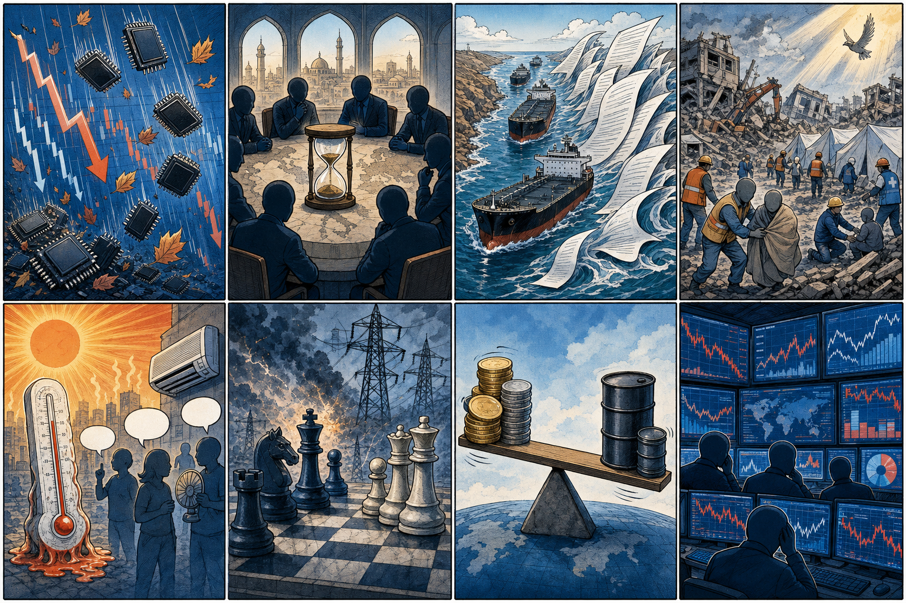
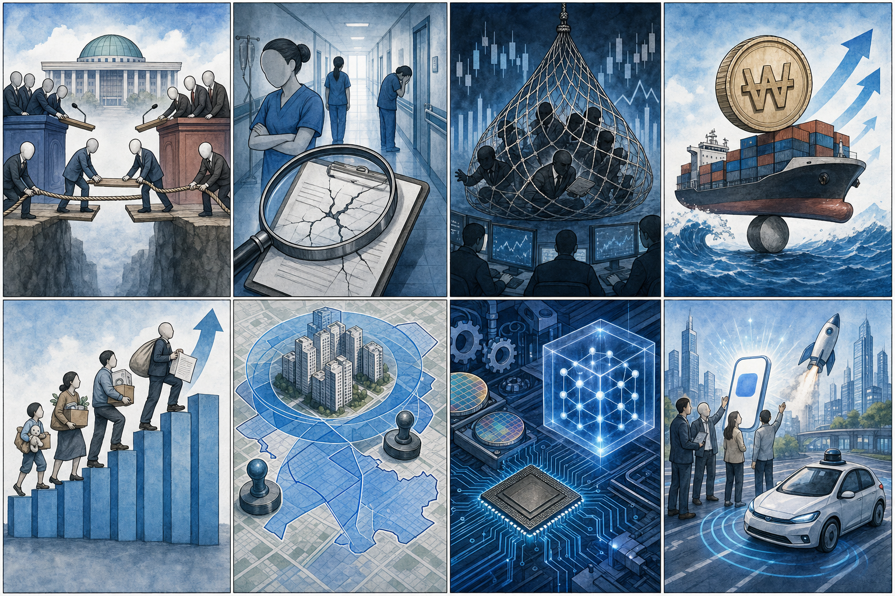

SK하이닉스 000660.KS
테마: HBM·AI 메모리
연결 이유: 마이크론 급락은 HBM 공급과 가격 기대가 과열됐는지 확인하게 만드는 직접 변수입니다.
체크포인트: 엔비디아 수요 코멘트, HBM 판가, 외국인 수급
오늘 새벽 확인된 기사만 선별해 배경·핵심 사실·이해관계자 영향을 한 번에 읽히도록 정리했습니다.
7월 2일 KST 새벽 미국 증시는 반도체주 매도와 기술주 차익실현으로 약세 마감했습니다. 나스닥은 0.66% 하락했고, 마이크론이 10%대 급락하면서 AI 메모리 기대가 이미 주가에 상당 부분 반영됐는지 점검하는 장세가 됐습니다.
테마: HBM·AI 메모리
연결 이유: 마이크론 급락은 HBM 공급과 가격 기대가 과열됐는지 확인하게 만드는 직접 변수입니다.
체크포인트: 엔비디아 수요 코멘트, HBM 판가, 외국인 수급
테마: 메모리·파운드리·양자컴 공정
연결 이유: 반도체 차익실현과 동시에 공정 시뮬레이션 기술 투자가 부각돼 단기 주가와 중장기 기술 경쟁력이 분리돼 평가될 수 있습니다.
체크포인트: 메모리 가격, 파운드리 수율 뉴스, 양자컴 PoC 진척
테마: 유가·환율·해운/항공 비용
연결 이유: 호르무즈 정상화 지연과 유가 변동은 항공유 비용과 환율 부담으로 연결됩니다.
체크포인트: WTI/브렌트, 원/달러, 여객 수요와 유류할증료
내용요약 미국 증시는 반도체주 차익실현이 집중되며 일제히 하락했고, 나스닥은 0.66% 내렸다는 보도가 나왔습니다. 최근 AI 메모리 기대가 빠르게 가격에 반영된 뒤 마이크론 급락이 업종 전반의 밸류에이션 부담을 드러낸 흐름입니다.
예상여파 국내에서는 삼성전자·SK하이닉스와 반도체 장비·소재주의 단기 변동성이 커질 수 있습니다. 다만 AI 서버 투자 자체가 꺾인 신호인지, 과열 해소인지에 따라 매수 기회와 리스크 판단이 갈립니다.
내용요약 오만이 이란에 이어 호르무즈 통행료 성격의 자발적 수수료를 미국 측에 제안했다는 보도와, 기뢰 제거에 최소 두 달이 걸릴 수 있다는 분석이 나왔습니다. 중동 긴장이 군사 충돌 이후 해운·보험·통행 비용 문제로 옮겨붙는 양상입니다.
예상여파 원유·LNG 수입 의존도가 높은 한국에는 유가, 해상운임, 보험료, 원/달러 환율이 동시에 부담으로 작용할 수 있습니다. 정유·화학·항공·물류 업종은 공급 차질보다 비용 구조 변화를 먼저 점검해야 합니다.
내용요약 베네수엘라 강진 사망자가 2천 명을 넘어 약 2,300명 수준으로 늘었고, 당국은 일주일간 국가 애도 기간을 선포했습니다. 구조 골든타임이 지나면서 인명 피해와 주거·전력·의료 인프라 손상이 함께 커지고 있습니다.
예상여파 국제 구호 수요가 확대되고 에너지·원자재 생산 지역의 물류 차질 여부가 시장 변수로 떠오를 수 있습니다. 중남미 리스크는 원유·광물 가격과 보험·재보험 업종에도 간접 영향을 줄 수 있습니다.
내용요약 유럽의 기록적 폭염이 에어컨 보급 필요성과 전력 소비, 탄소 배출을 둘러싼 정치 논쟁으로 확대되고 있습니다. 폭염 대응은 더 이상 일시적 재난 대응이 아니라 주거·전력망·복지 정책의 결합 과제가 됐습니다.
예상여파 냉방 수요 증가는 전력설비, 데이터센터, 건물 에너지 효율, 히트펌프·ESS 시장의 중장기 수요를 키울 수 있습니다. 한국 기업도 유럽향 고효율 냉방·전력관리 솔루션 기회를 살펴볼 필요가 있습니다.

주제: 반도체 차익실현, 호르무즈 비용 리스크, 베네수엘라 강진, 유럽 폭염과 전력망
내용요약 이재명 대통령이 당내 통합과 외연 확장을 강조하는 가운데, 여당 지도부 경쟁을 둘러싼 발언들이 이어졌습니다. 국정 초반 정책 추진력을 확보하려면 단순한 구호보다 계파·노선 갈등을 줄이는 실제 조정 능력이 중요하다는 신호입니다.
예상여파 정책 입법 속도와 규제·세제 개편 일정은 여당 내부 안정성에 영향을 받을 수 있습니다. 기업 입장에서는 산업정책, 노동·금융 규제, 예산 편성의 우선순위가 어떻게 정리되는지 확인해야 합니다.
내용요약 병원 내 괴롭힘으로 지목된 간호사 사망 사건에 대해 대통령이 끔찍한 폭력이라고 표현하며 불법행위 규명과 엄정 조치를 주문했습니다. 의료현장의 인력난과 폐쇄적 조직문화 문제가 노동권·환자 안전 이슈로 동시에 부상한 사건입니다.
예상여파 병원·의료기관에는 직장 내 괴롭힘 예방, 근무표·교육 체계, 내부 신고 시스템 개선 압력이 커질 수 있습니다. 헬스케어 기업도 인력관리와 컴플라이언스 리스크를 ESG 관점에서 봐야 합니다.
내용요약 자본시장 불공정거래 근절을 내세운 이른바 ‘주가조작 패가망신 1호’ 사건에서 피의자 4명의 구속영장이 기각됐습니다. 법원은 혐의 특정과 다툼의 여지, 방어권 보장 등을 이유로 든 것으로 보도됐습니다.
예상여파 금융당국의 강경 기조와 법원의 증거 기준 사이 간극이 드러나면서 향후 수사 보강과 제도 개선 논의가 이어질 수 있습니다. 시장에는 단기 충격보다 불공정거래 감시 강화라는 중장기 신호가 더 중요합니다.
내용요약 5대 은행의 6월 가계대출이 4조1천억 원 늘어 11개월 만에 가장 큰 증가폭을 기록했다는 보도가 나왔습니다. 주택 매수 수요와 투자자금 수요가 금리 인하 기대와 맞물리며 부채 증가세를 다시 키우고 있습니다.
예상여파 금융당국은 대출 규제와 부동산 시장 안정책을 동시에 고민할 가능성이 높습니다. 은행·건설·부동산 플랫폼에는 거래 회복 기대와 규제 강화 리스크가 함께 작동할 수 있습니다.
내용요약 행정체제 개편 첫날 지방세 납부 시스템 위택스가 먹통이 되며 자동차세·취득세 등 신고와 납부에 차질이 발생했습니다. 정부는 납부기한을 7월 3일까지 연장하는 방식으로 민원 충격을 줄였습니다.
예상여파 공공 디지털 전환에서 시스템 통합·마이그레이션 검증의 중요성이 다시 확인됐습니다. SI·클라우드·보안 업체에는 장애 예방, 이중화, 대국민 서비스 모니터링 수요가 커질 수 있습니다.

주제: 통합 정치, 의료현장 노동, 자본시장 감시, 가계대출, 위택스 장애, 반도체·양자컴
내용요약 삼성이 반도체 제조 공정 시뮬레이션에 양자컴퓨팅을 활용하는 기술 전략을 띄웠다는 보도가 나왔습니다. 미세 공정이 나노를 넘어 옹스트롬급으로 이동하면서 기존 계산 방식만으로는 공정 최적화와 소재 탐색 비용이 커지고 있습니다.
예상여파 양자컴퓨팅, EDA, 소재 시뮬레이션, 공정 자동화 스타트업에는 대기업 PoC와 협업 기회가 생길 수 있습니다. 반대로 기술 성숙도와 실제 생산성 개선 효과를 검증하는 시간이 필요합니다.
내용요약 레벨4 자율주행차 사고에서 운전자 책임만으로 볼 수 있는지, 제조사와 소프트웨어 공급자의 책임까지 물을 수 있는지 논쟁이 커지고 있습니다. 자율주행 상용화가 택시·마을버스 등 서비스 단계로 들어가며 법·보험·데이터 기록 기준이 핵심 쟁점이 됐습니다.
예상여파 모빌리티 스타트업은 기술 성능뿐 아니라 사고 데이터 보존, 보험 설계, 제조물책임 대응 체계를 갖춰야 합니다. 규정이 명확해질수록 검증된 안전 솔루션과 관제 시스템 수요가 늘어날 수 있습니다.
내용요약 핀테크 업계에서는 단순 피칭보다 수익모델과 규제 대응, 투자자 설득 구조를 함께 설계해야 한다는 논의가 이어졌습니다. 금리와 가계대출, 지급결제 규제가 동시에 움직이는 환경에서는 성장성만으로 투자 유치가 어려워졌습니다.
예상여파 핀테크 스타트업은 사용자 증가보다 CAC, 리스크 관리, 라이선스·제휴 구조를 수치로 보여줘야 합니다. 금융권과의 협업은 빨라질 수 있지만, 컴플라이언스 비용도 함께 늘어날 가능성이 큽니다.